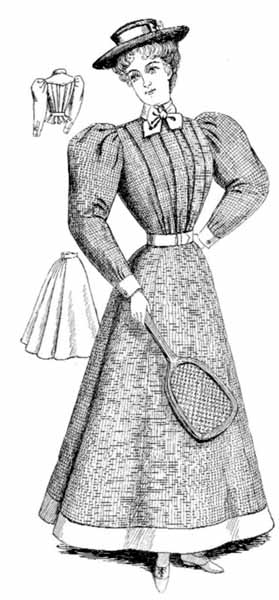

To understand the social and cultural implications of tennis dress we must first explore the history that made it what it is today. The first sight of tennis since the Renaissance of the Middle ages began in the 1870s when the once popular game of croquet had surpassed its point of popularity. In the Victorian era tennis was less seen as a sport but a leisurely activity enjoyed by elites and those who “expressed aspirations of the bourgeoisie” (Wilson, 17). This time period is where we start to see the introduction of “tennis whites” dress code in Wimbledon which was done partially to conceal to sweat but also to show the distinction between elites and the working class who could not possibly maintain the cleanliness of such a color (Allure, as cited in Shimray 2018. During this time women typically wore floor length skirts, large hats and heeled leather shoes. “In addition to the blatant class implications of tennis dress, the sport aided in progressive efforts. What made tennis so special for the time was its competitive regulations unlike many of the leisurely sports of that time and the newfound opportunity for women. Tennis arose during a time where women were fighting for equal opportunities like the right to vote and tennis provided the opportunity to play in an equal partnership to their male counterparts (Wilson, 11). Although it wasn’t until 1884 that women were allowed to participate in esteemed tournaments like Wimbledon, they started to reimagine tennis in a more serious manner than before. Dress was just as serious as the game itself.
image credit = Vintage Victorian < a href = "http://www.vintagevictorian.com/costume_1890_sport.html">
The 1890s is the beginning of a long chain of changes to tennis dress. During this time women ditched the long gowns for dress with larger armholes, pleats, and even introduced canvas shoes with rubber soles (Wilson, 52). In the twenties, ladies’ fashion is starting to get less conservative with the shortening of skirts and dresses to mid to upper calf (Hunt-Hurst as cited by Hall). This trend is reflected in tennis dress with short sleeve of sleeveless tops with a mid-length skirt. Players were still toting wooden rackets and new accessories like the sun visor (Rothenburg cited by CNN). During the thirties and forties, tennis attire followed the latest fashion trends with knee length skirts and defined waist showcasing the figure more and we also see the introduction of the classic crocodile of the Lacoste brand in men’s wear. Tennis dress or costume are slowly pushing the envelope during major tournaments like Wimbledon with the personalization of cuts, trims, and fabrics. This is where we start to see tennis fashion becoming more and more individualized. The fifties and sixties kept consistent with ultra-feminine blouse and skirt combinations but the major change is the shortening of the skirt to above the knee leading to what we recognize as the mini skirt. This was a sign of liberation that women felt during that time. The grooving era of the seventies brought figure hugging silhouettes, exaggerated collars, and shorter skirts more recognizable to today’s tennis dress (Garcia, Vogue). Bright colors, busy pattern, and spandex all brought a lighter feel to tennis dress introducing playful pastels and edgy look like the iconic white catsuit worn by Anne White. The marked differences between the original costume or dress for tennis and what we all recognize as the tennis uniform is astounding in its elasticity and currency with the ever-changing rule of fashion.